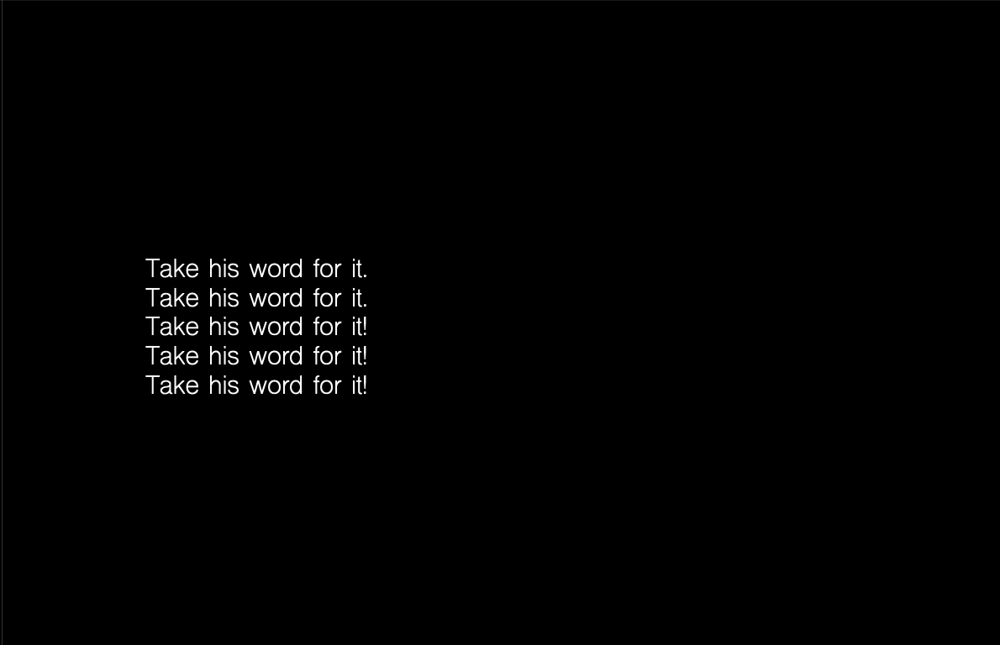
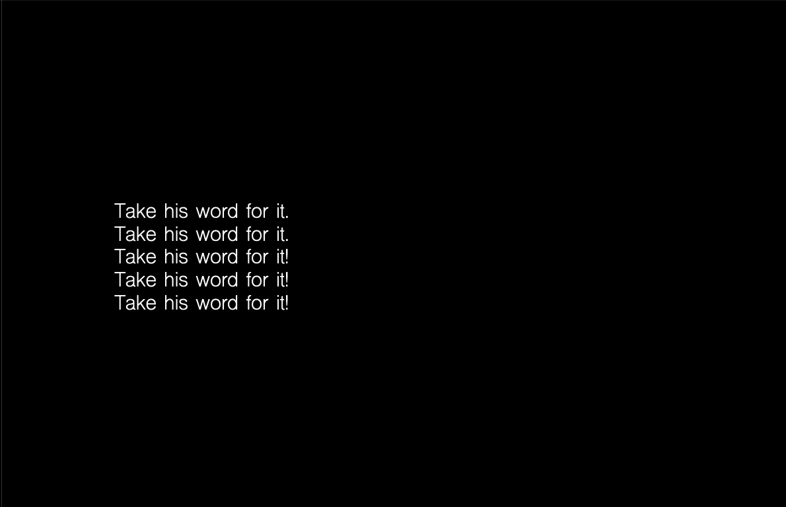
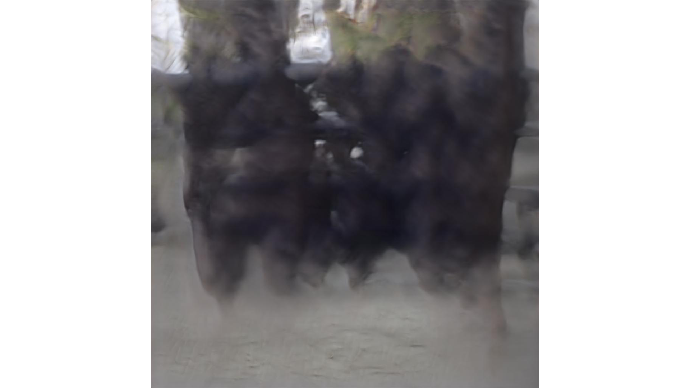
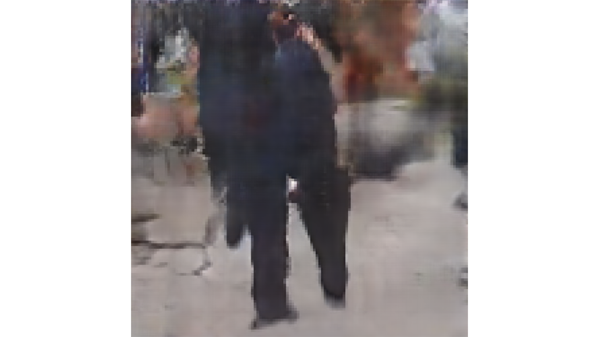
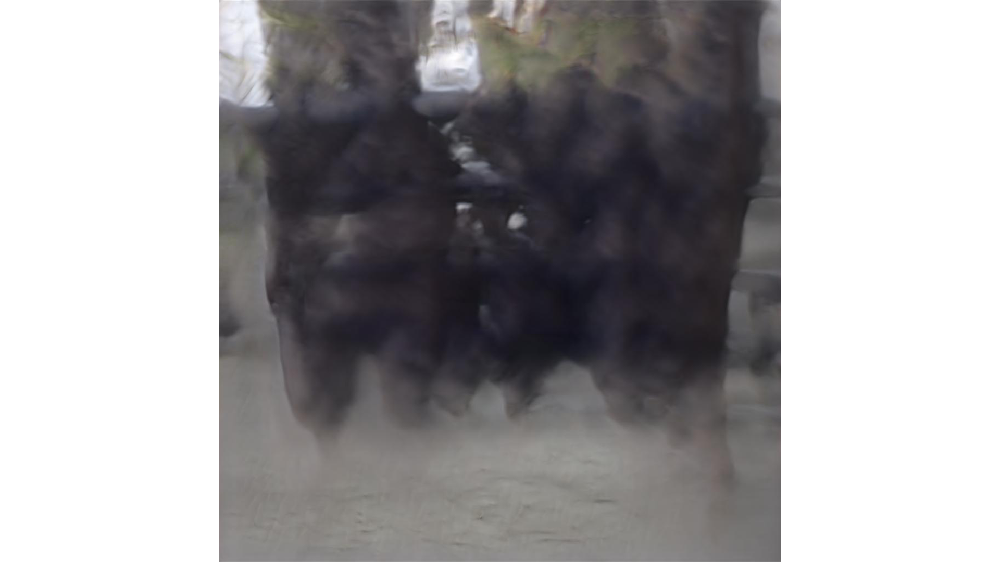
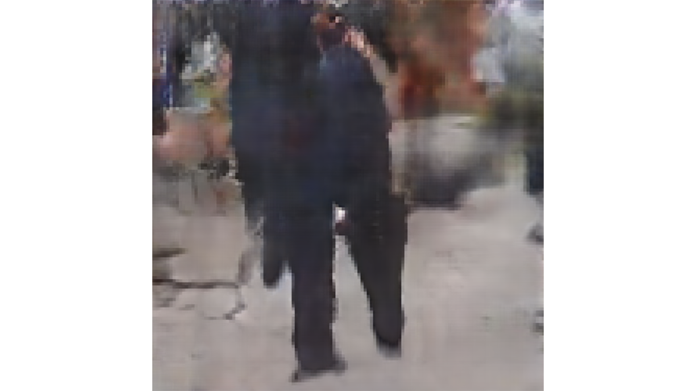

I was part of a research group, Extinction Event, for ayodamola tanimowo okunseinde. Extinction Event is a series of experiments that deconstructs the linear temporal narrative that oppresses Black bodies and uses technology to reimagine Black temporalities.
I helped gather image data and conduct qualitative research related to police violence against Black people in the United States and tested different natural language processing models (GPT2-simple, textgenrnn) and generative adversarial networks (DCGAN, StyleGAN) to create text and images in service of a larger art installation.
Trigger Warning: Please proceed with caution and read the below thorougly.
 



 



This project was created in collaboration with ayodamola tanimowo okunseinde, Mary Ann Badavi, Jeffrey Geiringer, and Nicole Lloyd